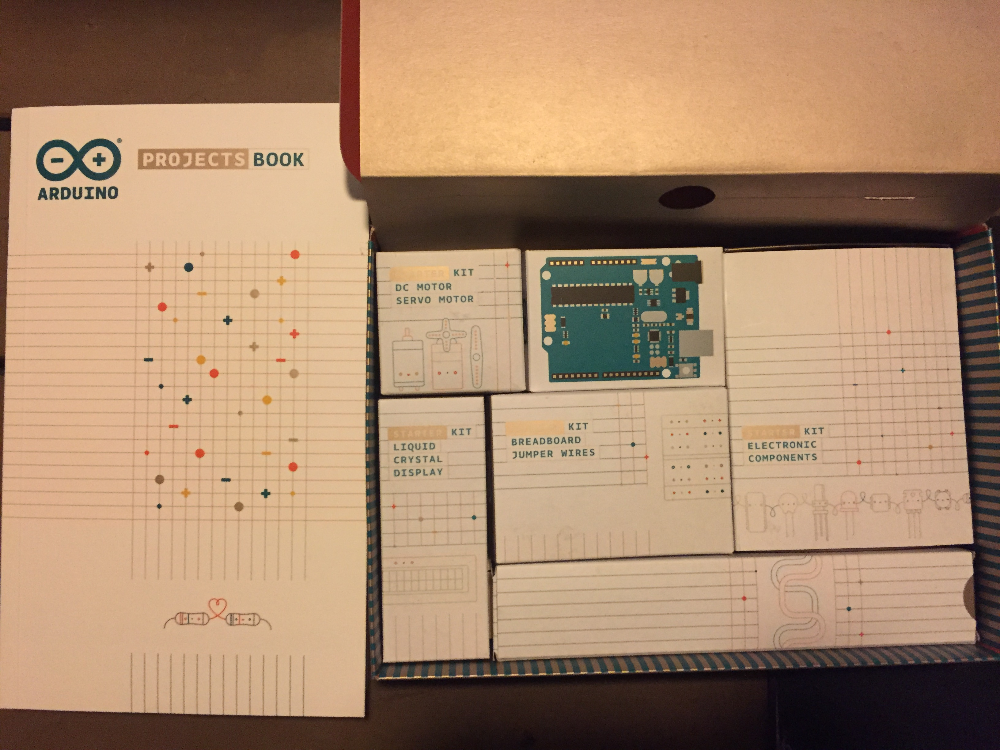
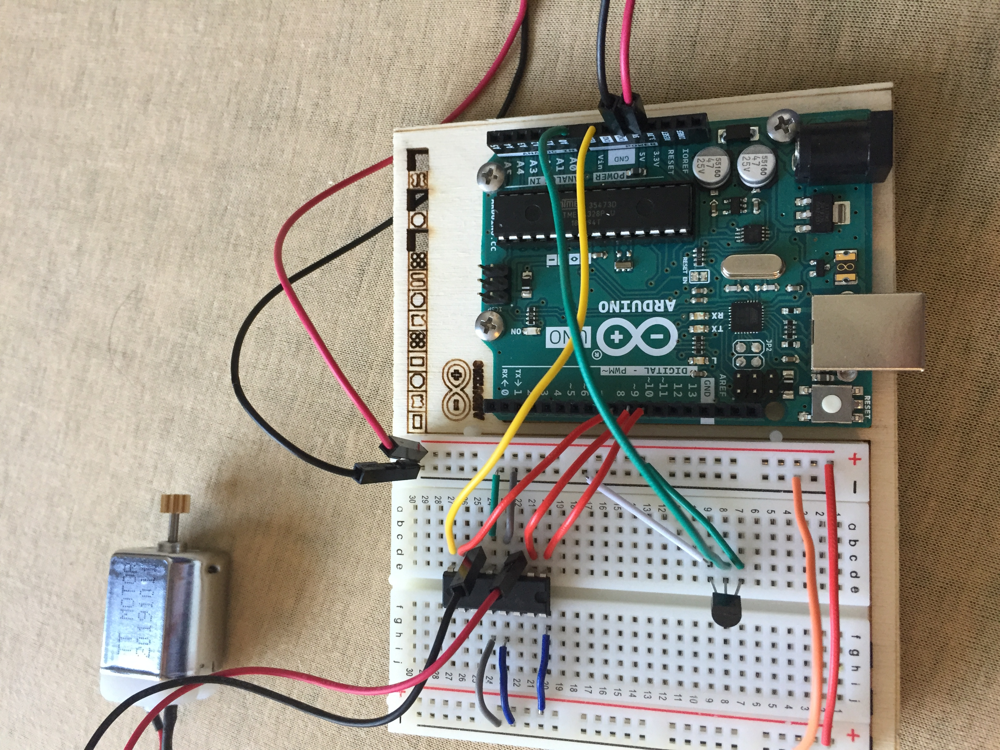

Elektronikk 101 & Arduino
Elektronikk 101 og Arduino temaene er blitt kombinert da de er relatert til hverandre. Selve oppgaven gikk ut på å bli kjent med Arduino og jobbe seg gjennom prosjektene i arduino prosjekt boken og/eller lage en egendefinert arduino prosjekt.
Jeg har laget en kort video som dokumenterer de første prosjektene jeg jobbet med, jeg bestemte meg å kutte ut resten da videoen hadde blitt ekstrem langt og kjedelig og ikke minst for mye tid hadde blitt brukt til å lage videon.
videoen finnes i bunnen av artikkelen

Da jeg ikke hadde noe tidligere erfaring med arduino bestemte jeg med å først jobbe gjennom boken. Og med det begynte jeg først med å følge videone som var lagt ut av Micheal ukentlig. Det var ganske enkelt å forstå og bli kjent arduino da forelesning videoene og ikke minst boken sørget for dette.
Etter jeg ble ferdig med nesten alle prosjektene i prosjekt boken bestemte jeg meg å lage en eller to egendefinerte prosjekter. Ikke noe for avansert eller komplisert. Kun noe innen for min forståelse.

Første egendefinerte prosjektet jeg lagde var LED Chaser med potentiometer som bestemmer forsinkelsen(delayperiod) mellom hvert lys som da økte eller minsket blinke hastigheten.
Jeg brukte 8 røde LED, 8 100 ohm resistorer, 1 potentiometer og ledninger til å koble alt sammen. Koblet korte fotene til LED lysene til jord og lange fotene til pin 2-10 via resistorene. Selve prosjektet var for enkelt da prosessen var lik mange av prosjektene i boken og koden var ikke veldig avansert

Det andre egendefinerte prosjektet var heller ikke så veldig vanskelig, men jeg slet litt med å få koden til å funke. Jeg baserte prosjektet på Love-o-meter prosjekten i boken. Ideen var å aktivere DC motoren når temperatur sensoren registrerte varme over en spesifik grade
Jeg brukte H-bridge til å kontrolere spenning tilført til DC motoren, temperatur sensor til å kontrollere aktivering og spin hastigheten og ledninger til å koble alt sammen. Selve koden er basert på Love-o-meter prosjektet da jeg fant ikke en bedre løsning. Men slutt produktet funket mer eller mindre som jeg hadde planlagt.